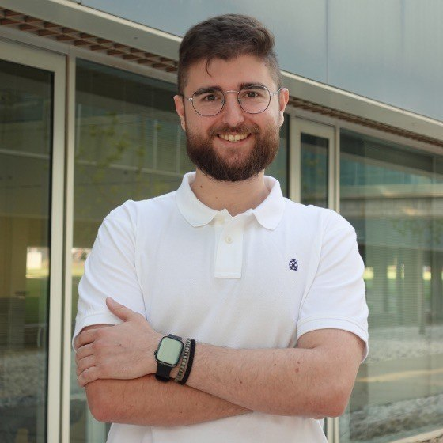

SPuMoNI
Data-quality and integrity assessment system (DIALCOA) for pharmaceutical manufacturing, validated in a real CMO under EU-GMP standards.
Related paper — Big Data Research (2021) ↗ Related paper — J. Pharma. Innovation (2023) ↗Barcelona, Spain
PhD Student & Software Engineer at BDSLab · ITACA (UPV)
Software engineer specialising in designing and building software for research and industry — from European R&D projects to mobile health applications — with 7+ years of experience at the Biomedical Data Science Lab (UPV).

I'm a Computer Science graduate from the Universitat Politècnica de València (UPV),
specialised in software engineering. I joined the Biomedical Data Science
Lab (BDSLab, ITACA-UPV) in 2019, during my Master's in Artificial Intelligence, Pattern
Recognition and Digital Imaging, and I'm currently completing my PhD thesis,
"Developing Academic Biomedical Software for Regulated Environments: A Case Study
Approach", on how research software can be engineered for real deployment in regulated
environments.
I design and build data-integrity systems for pharmaceutical manufacturing
and hospital pharmacy, a European data-quality labelling tool for the Health
Data Space, and monitoring frameworks for trustworthy clinical AI —
translating regulations such as GAMP 5, the EHDS and the EU AI Act into deployable software.
I'm also part of the team that maintains BDSLab's information systems, and I work across
full-stack, web and mobile development, following
agile methodologies.
Biomedical Data Science Lab (BDSLab) · ITACA, UPV — Valencia, Spain
Design and development of software for industry-oriented research groups, combining software engineering with applied research. Involved in European and technology-transfer projects across the pharmaceutical, biomedical and agri-food sectors. Member of the team responsible for BDSLab's information systems.
Universitat Politècnica de València (UPV)
Software development for industry-oriented research groups.
Universitat Politècnica de València (UPV)
Universitat Politècnica de València (UPV)
Specialised in software engineering.
Data-quality and integrity assessment system (DIALCOA) for pharmaceutical manufacturing, validated in a real CMO under EU-GMP standards.
Related paper — Big Data Research (2021) ↗ Related paper — J. Pharma. Innovation (2023) ↗Regulatory-aware digital quality-control system for hospital pharmacy compounding, deployed and validated at Hospital Dr. Peset (Valencia).
Data quality, utility and organisational-maturity labelling tool for the European Health Data Space (EHDS Article 78).
Related paper — Eur. J. Public Health (2026) ↗Robustness, fairness and dataset-shift monitoring framework for trustworthy clinical AI (ShinAI-Agent), aligned with the EU AI Act.
Smartphone app to monitor quality of life in lung cancer patients through phone sensors and integrated questionnaires.
Related paper — IJERPH (2019) ↗ Related paper — Int. J. Human–Computer Interaction (2024) ↗Development of predictive models for the agri-food sector.
PhD thesis: "Developing Academic Biomedical Software for Regulated Environments: A Case Study Approach" — more publications and links welcome, send them over and I'll keep this updated.
Interested in a project, a collaboration, or an opportunity? Get in touch.